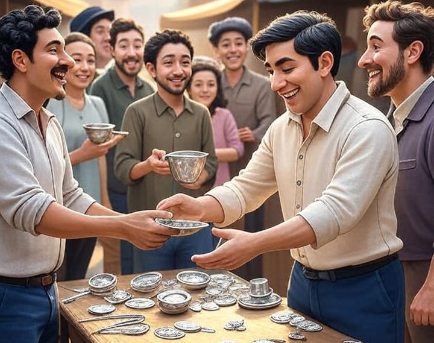
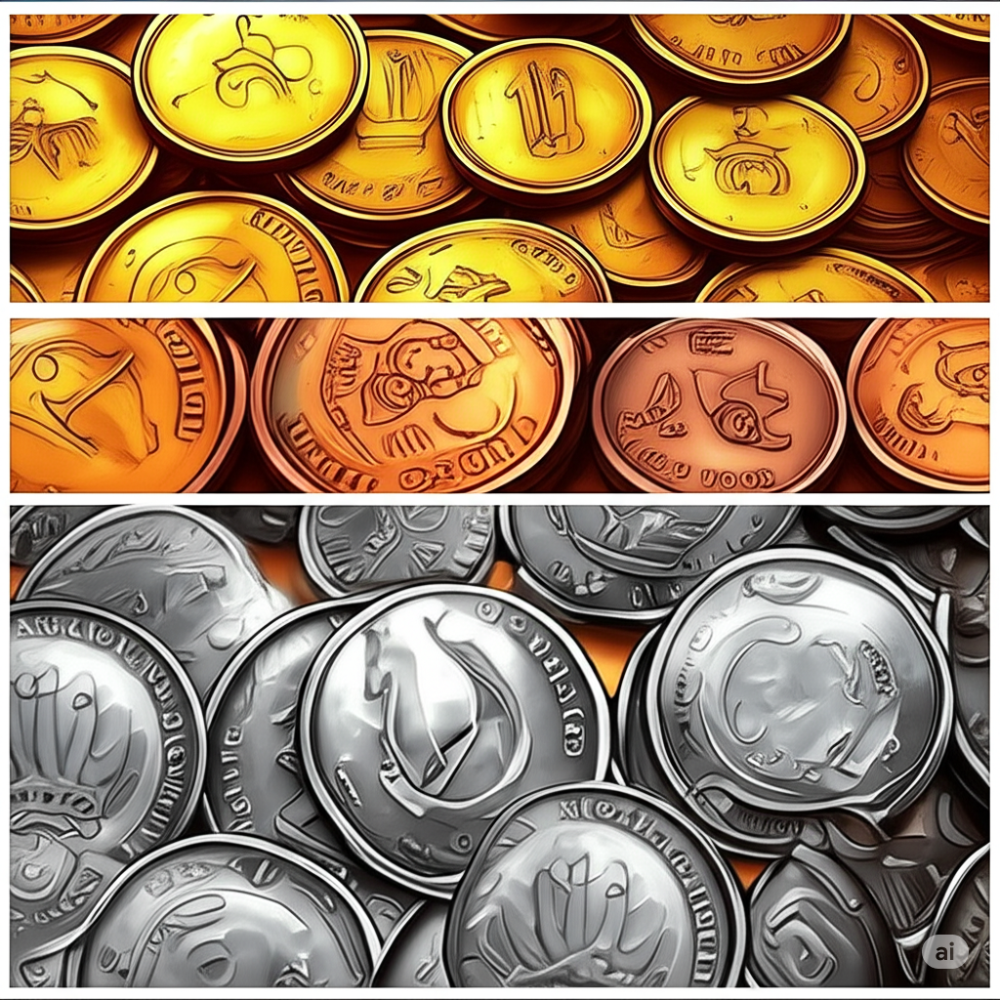
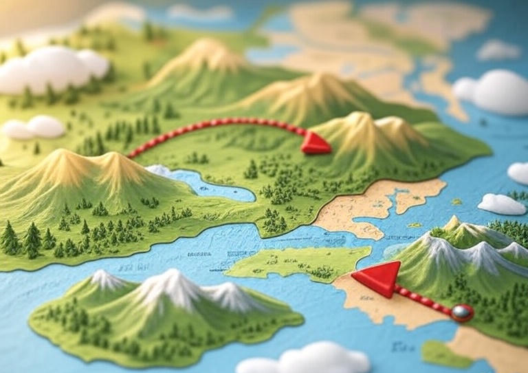

The Rise of Metal Money
After everyday objects like shells, beads and salt, people began using metals, which were stronger and easier to carry. Metals like gold, silver, and copper don't rot or break easily and quickly became the most sought after as they were rare and valuable so people trusted them.
At first, people used pieces of metal by weight. Later, they started making coins to make trade easier. Around 700 BCE, people in places like ancient Lydia (now Turkey) made coins from metals like gold and silver. It was King Croesus of Lydia, who is credited with introducing the world's first pure gold coins, known as the Croeseids. Coins often had special designs or stamps to show they were real and trusted by a leader or kingdom. The first coins had pictures of kings or animals stamped on them.
Coins helped to expand trade beyond local areas and towns, connecting distant countries and communities. People could take coins on long journeys to trade with friends in faraway places which helped everyones town grow bigger.
Moving to coins made from gold, silver and copper brought about a big change in what was viewed as money. A standard was created which helped revolutionise trade and laid the foundation for modern currency systems and the invention of paper money which was to follow.